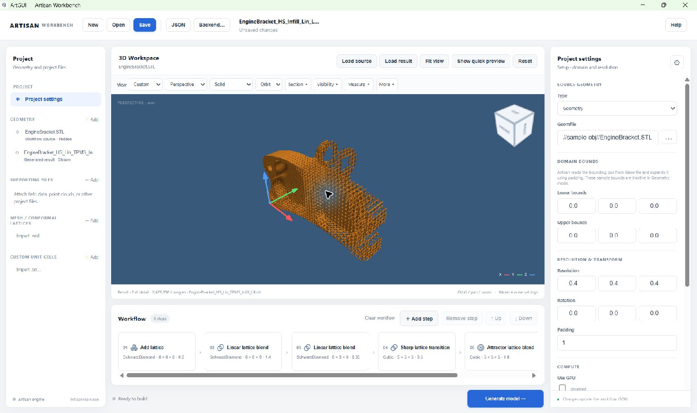

Your first model: engine bracket#
This walkthrough uses a supplied workflow to fill an engine bracket with a spatially varying lattice. You will open the project, check its inputs, inspect the operation sequence, and view the supplied result. You can then run your own variation.
Have these files ready#
The example uses the following layout inside the Artisan distribution folder:
Artisan_Dist/
├── ArtisanMain.exe
├── Test_json/
│ └── EngineBracket_HS_Infill_Lin_LR.json
├── sample-obj/
│ └── EngineBracket.STL
└── Test_results/
└── EngineBracket_HS_Lin_TPMS_Infill_LR.stl
The JSON describes the design, the first STL is the original bracket, and the second STL is an already generated result. The result filename is deliberately different from the JSON filename.
An unchanged copy of the workflow is available here:
Engine-bracket workflow.
It still requires the geometry and directory layout shown above; downloading
the JSON alone does not copy those files.
1. Open ArtGUI and the workflow#
Launch the ArtGUI / Artisan Workbench desktop application supplied with your installation.
Before experimenting, copy the example JSON to a new filename, such as
EngineBracket_trial.json, using your file manager. Keep it inTest_jsonfor this walkthrough.Choose Open in ArtGUI and select the copied JSON.
Check that the Project panel lists
EngineBracket.STLand that the Workflow contains six cards. The source preview loads automatically when its path can be found.Choose Fit view if the bracket is outside the visible area.
Note
Save writes to the file you opened. This version has no separate Save As command. Working on a copy keeps the original example available.
2. Check the source and calculation settings#
Select Project settings in the left panel. For the unchanged example, check these values; scroll the Properties panel to see the lower sections.
Setting |
Example value |
What to check |
|---|---|---|
Type |
|
The bracket file determines the domain. |
Geomfile |
|
The path must point to the original bracket. |
Resolution |
|
Keep this for the first run. |
Rotation |
|
No setup rotation is requested. |
Padding |
|
Retain the example’s domain padding. |
Use GPU |
Disabled |
The example requests CPU calculation. |
JSON working directory |
Disabled ( |
Relative paths are based on the backend working directory. |
Memory limit (bytes) |
|
The supplied memory setting is 1 GiB. |
With Type = Geometry, the greyed-out Sample bounds do not need to be filled in. They are inactive because the engine reads the geometry’s bounding box.
Choose Backend… and select ArtisanMain.exe in the Artisan_Dist
folder shown above if it is not already selected. Keep the complete backend
package together with its runtime files.
Important
This example has JsonWorkDir: false. Its paths start at the backend
working directory, not at Test_json. Enabling JSON working
directory without changing the paths would make the engine look for
Test_json/sample-obj/EngineBracket.STL. See Projects, geometry and file paths when moving
a project or using a different backend location.
3. Read the six-step design#
Select each workflow card to see its parameters. Scroll the workflow strip horizontally if the last cards are hidden.
Card |
Operation |
Role in this example |
|---|---|---|
01 |
Add lattice ( |
Start with |
02 |
Linear lattice blend ( |
Blend towards another SchwarzDiamond field with thickness parameter
|
03 |
Linear lattice blend ( |
Add a second linear variation with thickness parameter |
04 |
Sharp lattice transition ( |
Introduce |
05 |
Attractor lattice blend ( |
Introduce a local Cubic variation at |
06 |
Export model ( |
Write the final STL to the path in |
The original JSON uses the keys 1, 2, 3, 4, 5 and 99.
ArtGUI displays their ordered positions as six cards. A card number is not
necessarily the original JSON key.
Keep the supplied plane normals, transformations, Fill settings and step order for your first run. A thickness parameter does not necessarily equal a measured wall thickness for every lattice type.
4. Inspect the supplied result first#
Choose Load result and open
Test_results/EngineBracket_HS_Lin_TPMS_Infill_LR.stl.Open Visibility. Hide the source so that its solid surface does not cover the lattice result.
Select the result with Make active. If it is sampled, choose Load full detail before judging the final surface or measuring it.
Use Fit view, then orbit and zoom to inspect the bracket.


The supplied STL opened as a result layer. This is an existing output file, not a live preview recalculated from the current parameter values.#
You can stop here if you only want to explore the interface. Loading this result does not require a new Artisan calculation.
5. Generate your own result#
Select the Export model card. Change
outfileto a new name such as.//Test_results/EngineBracket_trial.stl. Check that the output folder exists and is writable.Choose Save. Check the project name at the top of the window.
Choose Generate model. ArtGUI saves the current project before starting Artisan; if saving is cancelled or fails, generation does not start.
Watch the status row below Workflow. Use Show log for calculation messages. Wait for a successful completion status.
Choose Load result and select
EngineBracket_trial.stl. Generation does not automatically replace the result already in the viewer.
Post-processing in this example combines meshes and removes isolated parts. It retains partition mesh files and does not request LAZ point export. These options are under Project settings → Post process.
6. Make one controlled change#
For a simple comparison, select card 01 and change its thickness parameter
from 0.2 to 0.3. Give the export a second filename, generate, and load
that result. Keep all other settings unchanged so that the comparison is
meaningful. Return to 0.2 to restore the supplied setting.
The later blending steps also affect the shape, so this is not a uniform thickness change throughout the bracket. Use full-detail viewing and, where appropriate, the measurement tools to inspect the actual generated mesh.
For the next steps, see Build and edit workflows and Inspect models in the 3D Workspace.